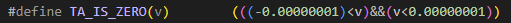

技术分析（Technical Analysis）指标库
TA-Lib 是一个 Python 库，封装了用 C 语言实现的金融交易技术分析的诸多常用指标。为了方便用户在 DolphinDB 中计算这些技术指标，我们使用 DolphinDB 脚本实现了 TA-Lib 中包含的指标函数，并封装在 DolphinDB ta module 中。因为 DolphinDB ta module 是基于 DolphinDB V1.10.3 开发的，所以使用 ta 模块要求 DolphinDB V1.10.3 或以上版本。
为了更好地支持 ta module 中的函数在 DolphinDB 的流式增量计算引擎中使用，我们基于 DolphinDB V1.30.20 和 DolphinDB V2.00.8 对 ta module 进行了修订。
匹配不同 DolphinDB 版本的 ta module：
注意： 如果 DolpinDB 版本高于 V1.30.20 或 V2.00.8，选择支持 V1.30.20, V2.00.8 版本的 ta.dos。
1. 函数及参数的命名与用法规范
与 TA-Lib 中所有函数名大写以及所有参数名小写的规范不同，ta 模块中，函数名及参数名均采用驼峰式命名法。
例如，TA-Lib 中 DEMA 函数的语法为
DEMA(close, timeperiod=30)。在 ta 模块中相应的函数为dema(close, timePeriod)。TA-Lib 中某些函数有可选参数。ta 模块中，如果应用于流计算中，所有参数皆为必选。
为得到有意义的结果，ta 模块中函数的参数 timePeriod 要求至少是2。
2. 使用范例
2.1. 脚本中直接使用指标函数
对一个向量直接使用 ta 模块中的 wma 函数进行计算：
use ta
close = 7.2 6.97 7.08 6.74 6.49 5.9 6.26 5.9 5.35 5.63
x = wma(close, 5);2.2. 在 SQL 语句中分组使用
用户经常需要在数据表中对多组数据在每组内进行计算。在以下例子中，我们构造了一个包含2个股票的数据表：
close = 7.2 6.97 7.08 6.74 6.49 5.9 6.26 5.9 5.35 5.63 3.81 3.935 4.04 3.74 3.7 3.33 3.64 3.31 2.69 2.72
date = (2020.03.02 + 0..4 join 7..11).take(20)
symbol = take(`F,10) join take(`GPRO,10)
t = table(symbol, date, close)对其中每只股票使用 ta 模块中的 wma 函数进行计算：
update t set wma = wma(close, 5) context by symbol2.3. 返回多个列的结果
某些函数会返回多个列的结果，例如函数 bBands。
直接使用的例子：
close = 7.2 6.97 7.08 6.74 6.49 5.9 6.26 5.9 5.35 5.63
low, mid, high = bBands(close, 5, 2, 2, 2);在 SQL 语句中使用的例子：
close = 7.2 6.97 7.08 6.74 6.49 5.9 6.26 5.9 5.35 5.63 3.81 3.935 4.04 3.74 3.7 3.33 3.64 3.31 2.69 2.72
date = (2020.03.02 + 0..4 join 7..11).take(20)
symbol = take(`F,10) join take(`GPRO,10)
t = table(symbol, date, close)
select *, bBands(close, 5, 2, 2, 2) as `high`mid`low from t context by symbol
symbol date close high mid low
------ ---------- ----- -------- -------- --------
F 2020.03.02 7.2
F 2020.03.03 6.97
F 2020.03.04 7.08
F 2020.03.05 6.74
F 2020.03.06 6.49 7.292691 6.786 6.279309
F 2020.03.09 5.9 7.294248 6.454 5.613752
F 2020.03.10 6.26 7.134406 6.328667 5.522927
F 2020.03.11 5.9 6.789441 6.130667 5.471892
F 2020.03.12 5.35 6.601667 5.828 5.054333
F 2020.03.13 5.63 6.319728 5.711333 5.102939
GPRO 2020.03.02 3.81
GPRO 2020.03.03 3.935
GPRO 2020.03.04 4.04
GPRO 2020.03.05 3.74
GPRO 2020.03.06 3.7 4.069365 3.817333 3.565302
GPRO 2020.03.09 3.33 4.133371 3.645667 3.157962
GPRO 2020.03.10 3.64 4.062941 3.609333 3.155726
GPRO 2020.03.11 3.31 3.854172 3.482667 3.111162
GPRO 2020.03.12 2.69 3.915172 3.198 2.480828
GPRO 2020.03.13 2.72 3.738386 2.993333 2.248283. 函数计算性能
本节将以 EMA 函数为例做直接使用的性能对比，同时使用真实股票日频数据对所有函数进行分组使用性能对比。
3.1. 直接使用性能对比
在 DolphinDB 中：
use ta
close = 7.2 6.97 7.08 6.74 6.49 5.9 6.26 5.9 5.35 5.63
close = take(close, 10000000)
timer x = ta::ema(close, 30)对一个长度为10000000的向量直接使用 ta 模块中的 ema 函数，耗时为42ms。
与之对应的 Python 代码如下：
import numpy as np
import talib
import time
close = np.array([7.2,6.97,7.08,6.74,6.49,5.9,6.26,5.9,5.35,5.63])
close = np.tile(close,10000000)
start_time = time.time()
x = talib.EMA(close, 30)
print("--- %s seconds ---" % (time.time() - start_time))Python TA-Lib 库中的 EMA 函数耗时为418ms，是 DolphinDB ta module 中的 ema 函数的10倍左右。
3.2. 分组使用性能对比
- 测试数据为上海证券交易所2020年，全年2919个证券（筛选交易日大于120）日频交易数据，总记录数为686,104条。下载 测试数据 ，解压后放置于[home]下。
- 计算逻辑为按照股票代码进行分组计算各指标。
- 为了测试函数计算性能，DolphinDB 和 Python 测试代码都是单线程运行。
测试结果如下表所示：
| 序号 | 函数 | Python（ms） | DolphinDB（ms） | 运行时间比 |
|---|---|---|---|---|
| 1 | VAR | 294 | 17 | 17 |
| 2 | STDDEV | 255 | 21 | 12 |
| 3 | BETA | 390 | 42 | 9 |
| 4 | SMA | 286 | 16 | 17 |
| 5 | EMA | 262 | 14 | 19 |
| 6 | WMA | 267 | 17 | 16 |
| 7 | DEMA | 256 | 19 | 13 |
| 8 | TEMA | 262 | 30 | 9 |
| 9 | TRIMA | 271 | 26 | 10 |
| 10 | KAMA | 273 | 19 | 14 |
| 11 | T3 | 265 | 31 | 9 |
| 12 | MA | 244 | 19 | 13 |
| 13 | BBANDS | 298 | 54 | 5 |
| 14 | RSI | 278 | 51 | 5 |
| 15 | STOCHF | 516 | 83 | 6 |
| 16 | STOCH | 477 | 93 | 5 |
| 17 | STOCHRSI | 263 | 133 | 2 |
| 18 | TRIX | 243 | 32 | 7 |
| 19 | CORREL | 327 | 35 | 9 |
| 20 | LINEARREG_SLOPE | 229 | 21 | 11 |
| 21 | LINEARREG_INTERCEPT | 238 | 21 | 11 |
| 22 | LINEARREG_ANGLE | 265 | 32 | 8 |
| 23 | LINEARREG | 288 | 56 | 5 |
| 24 | TSF | 254 | 55 | 5 |
| 25 | BOP | 505 | 40 | 12 |
| 26 | CCI | 444 | 75 | 6 |
| 27 | TRANGE | 454 | 25 | 18 |
| 28 | PLUS_DM | 345 | 54 | 6 |
| 29 | PLUS_DI | 413 | 117 | 4 |
| 30 | MINUS_DM | 331 | 58 | 6 |
| 31 | MINUS_DI | 428 | 78 | 5 |
| 32 | DX | 417 | 118 | 4 |
| 33 | ADX | 419 | 110 | 4 |
| 34 | ADXR | 415 | 118 | 4 |
| 35 | CMO | 238 | 53 | 4 |
| 36 | MACD | 283 | 59 | 5 |
| 37 | MACDEXT | 296 | 72 | 4 |
| 38 | MACDFIX | 285 | 56 | 5 |
| 39 | MIDPRICE | 365 | 48 | 8 |
| 40 | MIDPOINT | 256 | 44 | 6 |
| 41 | MOM | 274 | 17 | 16 |
| 42 | ROC | 249 | 23 | 11 |
| 43 | ROCP | 246 | 21 | 11 |
| 44 | ROCR | 248 | 17 | 14 |
| 45 | ROCR100 | 243 | 20 | 12 |
| 46 | PPO | 256 | 39 | 6 |
| 47 | MAVP | 401 | 127 | 3 |
| 48 | APO | 259 | 33 | 8 |
| 49 | AROON | 361 | 62 | 6 |
| 50 | AROONOSC | 371 | 59 | 6 |
| 51 | ULTOSC | 476 | 202 | 2 |
| 52 | WILLR | 435 | 65 | 7 |
| 53 | AD | 502 | 42 | 12 |
| 54 | OBV | 329 | 47 | 7 |
| 55 | AVGPRICE | 503 | 45 | 11 |
| 56 | MEDPRICE | 334 | 20 | 17 |
| 57 | TYPPRICE | 443 | 27 | 16 |
| 58 | WCLPRICE | 411 | 28 | 15 |
| 59 | ATR | 422 | 31 | 14 |
| 60 | NATR | 419 | 37 | 11 |
| 61 | MFI | 510 | 103 | 5 |
从测试结果分析可知：
- DolphinDB ta module 中的函数计算性能都超过了 Python TA-Lib 库，最大的性能差距达到18倍，普遍性能差距在9倍左右。
Python pandas测试核心代码
data.groupby("symbol").apply(lambda x: talib.EMA(np.array(x.close), 30))DolphinDB测试核心代码
select ta::ema(close, timePeriod=30) as `EMA from data context by symbol4. 正确性验证
基于分组使用性能对比中的测试数据和代码，验证 DolphinDB ta module 中函数的计算结果是否和 Python TA-Lib 库一致。
4.1. NULL 值的处理
若 TA-Lib 的输入向量开始包含空值，则从第一个非空位置开始计算。ta 模块采用了相同的策略。
对一个滚动/累积窗口长度为 k 的函数，每组最初的 (k-1) 个位置的结果均为空。这一点 ta 模块与 TA-Lib 模块的结果一致。但若一组中第一个非空值之后再有空值，该组此空值位置以及所有以后位置在 TA-Lib 函数中的结果有可能均为空值。对 ta 模块函数，除非窗口中非空值数据的数量不足以计算指标（例如计算方差时只有一个非空值），否则在这些位置均会产生非空的结果。
DolphinDB 代码与结果：
close = [99.9, NULL, 84.69, 31.38, 60.9, 83.3, 97.26, 98.67]
ta::var(close, 5, 1);
[,,,,670.417819,467.420569,539.753584,644.748976]Python 代码与结果：
close = np.array([99.9, np.nan, 84.69, 31.38, 60.9, 83.3, 97.26, 98.67])
talib.VAR(close, 5, 1)
array([nan, nan, nan, nan, nan, nan, nan, nan])上面的总体方差计算中，因为 close 的第二个值为空值，ta 模块和 TA-Lib 的输出不同，TA-Lib 输出全部为空值。如果替换空值为非空值 81.11，ta 模块和 TA-Lib 得到相同的结果。在第一个元素 99.9 之前加一个空值，两者的结果仍然相同。
简而言之，当输入参数中空值，若存在的话，只集中在开始的位置时，ta 模块和 TA-Lib 的输出结果才会完全一致。
4.2. 中间值近似问题
结果有差异的函数：
BETA, CORREL
原因：
BETA, CORREL指标函数的公式为：
在 TA-Lib 中，会对两个分母值用 TA_IS_ZERO 进行判断，如果为真，结果值为0.0，以beta为例，Python TA-Lib部分代码如下：
其中，TA_IS_ZERO 的定义为：

而在 DolphinDB 的 ta 模块中，我们直接使用内置函数 mbeta 和 mcorr 来计算：
//beta
@state
def beta(high, low, timePeriod=5){
return talib(mbeta, low.ratios() - 1, high.ratios() - 1, timePeriod)
}
//correl
@state
def correl(high, low, timePeriod=30){
high_, low_ = talibNull(high, low)
return talib(mcorr, high, low, timePeriod)
}这里没有与Python TA-Lib 相同的TA_IS_ZERO判断，所以会导致某些结果会与Python TA-Lib计算结果不同。但是使用内置函数 mbeta 和 mcorr 来计算不光能提高计算效率，同时也能以极简的代码实现指标的计算。
4.3. 浮点数精度优化
结果有差异的函数：
CCI, STOCHRSI, MFI
原因：
Python TA-Lib 中，CCI, MFI 的浮点数精度问题与4.2中所提及的问题相似，会涉及到一些对中间值的判断，如：
/* CCI */
if( (tempReal != 0.0) && (tempReal2 != 0.0) )
...
else
/* MFI */
if( tempValue2 < 0 )
...
else if( tempValue2 > 0 )
...
else对计算中间值判断是否大于零、小于零、等于或不等于零很有可能会让我们陷入到机器误差造成的麻烦中，举一个例子，在 Python中 运行：
(2.86 + 2.7 + 2.73) - (2.81 + 2.7 + 2.78)
1.7763568394002505e-15上述计算结果应该是为0，但是由于浮点数的存储机制，最终计算结果就变成了一个很小的正数，这样便会导致判断语句走向错误的分支，使得最终计算结果与正确的结果相差甚远。很明显这并不是 TA-Lib 作者的本意，是浮点数精度问题导致的误差。
另外，STOCHRSI 也是由于浮点数的细微精度问题造成最终结果与预想的结果相差很大的一个指标。具体来说，STOCHRSI 可以简单的理解为 STOCH(RSI(close, period), period, fastkPeriod, fastdPeriod, fastdMatype)，以第一个结果 slowk 为例：
在 Python TA-Lib 中，直接调用了 RSI，并没有对其做任何处理，这样就会让极小的机器误差对最终结果造成极大的影响。这里举一个例子：
这里计算了一组RSI并打印出了最后5个值，可以看到，close中最后5个值都是2.14，那么RSI最后5个值应该是相等的，但是实际上计算的结果值会有10E-14数量级的误差。也就是说，Python TA-Lib在计算RSI的时候会有一个很小的误差，如果我们只需得到RSI的计算结果，那么这个很小的误差完全是可以忽略的。但如果将RSI的计算结果不加任何处理地作为STOCH的输入的话，这个机器误差就会对最终的结果造成非常大的影响。继续往下，我们用上述例子继续计算slowk，窗口内最大值为37.95876021268321，最小值为37.95876021268319，当前值为37.958760212683195，最终计算得到slowk为 33.33，与真实值 0 相差非常之大！综上所述，STOCHRSI 同样也是 Python TA-Lib 计算不准确的地方。
针对以上两种浮点数精度造成的问题，DolphinDB 的 ta 模块采取了舍弃部分精度的方法来避免计算中间值的微小机器误差造成的最终结果的巨大误差，从而可以计算出更精确的结果，具体代码如下：
//CCI
@state
def cci(high, low, close, timePeriod=14){
high_, low_, close_ = talibNull(high, low, close)
tp= (high_ + low_ + close_) / 3.0
tmp = tp - talib(mavg, tp, timePeriod)
return iif(abs(tmp) > 1E-12, tmp \ (0.015 * talib(mmad, tp, timePeriod)), 0.0)
}
//MFI
@state
def mfi(high, low, close, volume, timePeriod=14){
tp = round((high + low + close) / 3.0, 8)
deltasTp = deltas(tp)
pos = iif(nullCompare(>, deltasTp, 0), tp, 0)
neg = iif(nullCompare(<, deltasTp, 0), tp, 0)
return talib(msum, pos * volume, timePeriod) * 100 / (talib(msum, pos * volume , timePeriod) + talib(msum, neg * volume , timePeriod))
}
//STOCHRSI
@state
def stochRsi(close, timePeriod=14, fastkPeriod=5, fastdPeriod=3, fastdMatype=0) {
rsidx = round(rsi(close, timePeriod), 8)
high_, low_, close_ = talibNull(rsidx, rsidx, rsidx)
lowestLow = talib(mmin, low_, fastkPeriod)
fastk = (close_ - lowestLow) \ (talib(mmax, high_, fastkPeriod) - lowestLow) * 100
fastd = ma(fastk, fastdPeriod, fastdMatype)
fastk_, fastd_ = talibNull(fastk, fastd)
return fastk_, fastd_
}5. 实时流计算案例
DolphinDB V1.30.3 版本发布的响应式状态引擎（createReactiveStateEngine）是许多金融场景流批统一计算中的重要构件，DolphinDB ta module 对其做了适配，使得 ta 模块中的大部分函数可以在响应式状态引擎中实现增量计算。
- 当前无法在响应式状态引擎中使用的指标函数：
mavp。
示例代码如下：
//clean environment
def cleanEnvironment(){
try{ unsubscribeTable(tableName="inputTable",actionName="calculateTA") } catch(ex){ print(ex) }
try{ dropStreamEngine("taReactiveSateEngine") } catch(ex){ print(ex) }
try{ dropStreamTable(`inputTable) } catch(ex){ print(ex) }
try{ dropStreamTable(`outputTable) } catch(ex){ print(ex) }
undef all
}
cleanEnvironment()
go
//load module
use ta
//load data
schema = table(`tradedate`symbol`high`low`open`close`volume`bs`periods as name, `DATE`SYMBOL`DOUBLE`DOUBLE`DOUBLE`DOUBLE`DOUBLE`BOOL`INT as type)
data=loadText("/data/DolphinDB/200.8/server/testData.csv" ,schema=schema)
//define stream table
share streamTable(1:0, `tradedate`symbol`high`low`open`close`volume`bs`periods, `DATE`SYMBOL`DOUBLE`DOUBLE`DOUBLE`DOUBLE`DOUBLE`BOOL`INT) as inputTable
share streamTable(1:0, `symbol`tradedate`EMA`RSI`ROC`WILLR, `SYMBOL`DATE`DOUBLE`DOUBLE`DOUBLE`DOUBLE) as outputTable
//register stream computing engine
reactiveStateMetrics=<[
tradedate,
ta::ema(close, timePeriod=30) as `EMA,
ta::rsi(close, timePeriod=14) as `RSI,
ta::roc(close, timePeriod=10) as `ROC,
ta::willr(high, low, close, timePeriod=14) as `WILLR
]>
createReactiveStateEngine(name="taReactiveSateEngine", metrics=reactiveStateMetrics, dummyTable=inputTable, outputTable=outputTable, keyColumn=`symbol, keepOrder=true)
subscribeTable(tableName="inputTable", actionName="calculateTA", offset=-1, handler=getStreamEngine("taReactiveSateEngine"), msgAsTable=true, reconnect=true)
//replay data
submitJob("replay", "replay", replay{data, inputTable, `tradedate, `tradedate, 1000, true})6. DolphinDB ta 指标列表
6.1. Overlap Studies
| 函数 | 语法 | 解释 |
|---|---|---|
| bBands | bBands(close, timePeriod, nbDevUp, nbDevDn, maType) | Bollinger Bands |
| dema | dema(close, timePeriod) | Double Exponential Moving Average |
| ema | ema(close, timePeriod) | Exponential Moving Average |
| kama | kama(close, timePeriod) | Kaufman Adaptive Moving Average |
| ma | ma(close, timePeriod, maType) | Moving average |
| mavp | mavp(inReal, periods, minPeriod, maxPeriod, maType) | Moving average with variable period |
| midPoint | midPoint(close, timePeriod) | MidPoint over period |
| midPrice | midPrice(low, high, timePeriod) | Midpoint Price over period |
| sma | sma(close, timePeriod) | Simple Moving Average |
| t3 | t3(close, timePeriod, vfactor) | Triple Exponential Moving Average (T3) |
| tema | tema(close, timePeriod) | Triple Exponential Moving Average |
| trima | trima(close, timePeriod) | Triangular Moving Average |
| wma | wma(close, timePeriod) | Weighted Moving Average |
6.2. Momentum Indicators
| 函数 | 语法 | 解释 |
|---|---|---|
| adx | adx(high, low, close, timePeriod) | Average Directional Movement Index |
| adxr | adxr(high, low, close, timePeriod) | Average Directional Movement Index Rating |
| apo | apo(close,fastPeriod,slowPeriod,maType) | Absolute Price Oscillator |
| aroon | aroon(high,low,timePeriod) | Aroon |
| aroonOsc | aroonOsc(high, low, timePeriod) | Aroon Oscillator |
| bop | bop(open, high, low, close) | Balance Of Power |
| cci | cci(high, low, close, timePeriod) | Commodity Channel Index |
| cmo | cmo(close, timePeriod) | Chande Momentum Oscillator |
| dx | dx(high, low, close, timePeriod) | Directional Movement Index |
| macd | macd(close, fastPeriod, slowPeriod, signalPeriod) | Moving Average Convergence/Divergence |
| macdExt | macdExt(close, fastPeriod, fastMaType, slowPeriod, slowMaType, signalPeriod, signalMaType) | MACD with controllable MA type |
| macdFix | macdFix(close, signalPeriod) | Moving Average Convergence/Divergence Fix 12/26 |
| mfi | mfi(high, low, close, volume, timePeriod) | Money Flow Index |
| minus_di | minus_di(high, low, close, timePeriod) | Minus Directional Indicator |
| minus_dm | minus_dm(high, low, timePeriod) | Minus Directional Movement |
| mom | mom(close, timePeriod) | Momentum |
| plus_di | plus_di(high, low, close, timePeriod) | Plus Directional Indicator |
| plus_dm | plus_dm(high, low, timePeriod) | Plus Directional Movement |
| ppo | ppo(close, fastPeriod, slowPeriod, maType) | Percentage Price Oscillator |
| roc | roc(close, timePeriod) | Rate of change : ((price/prevPrice)-1)*100 |
| rocp | rocp(close, timePeriod) | Rate of change Percentage: (price-prevPrice)/prevPrice |
| rocr | rocr(close, timePeriod) | Rate of change ratio: (price/prevPrice) |
| rocr100 | rocr100(close, timeperiod) | Rate of change ratio 100 scale: (price/prevPrice)*100 |
| rsi | rsi(close, timePeriod) | Relative Strength Index |
| stoch | stoch(high, low, close, fastkPeriod, slowkPeriod, slowkMatype, slowdPeriod, slowdMatype) | Stochastic |
| stochf | stochf(high, low, close, fastkPeriod, fastdPeriod, fastdMatype) | Stochastic Fast |
| stochRsi | stochRsi(real, timePeriod, fastkPeriod, fastdPeriod, fastdMatype) | Stochastic Relative Strength Index |
| trix | trix(close, timePeriod) | 1-day Rate-Of-Change (ROC) of a Triple Smooth EMA |
| ultOsc | ultOsc(high, low, close, timePeriod1, timePeriod2, timePeriod3) | Ultimate Oscillator |
| willr | willr(high, low, close, timePeriod) | Williams' %R |
6.3. Volume Indicators
| 函数 | 语法 | 解释 |
|---|---|---|
| ad | ad(high, low, close, volume) | Chaikin A/D Line |
| obv | obv(close, volume) | On Balance Volume |
6.4. Volatility Indicators
| 函数 | 语法 | 解释 |
|---|---|---|
| atr | atr(high, low, close, timePeriod) | Average True Range |
| natr | natr(high, low, close, timePeriod) | Normalized Average True Range |
| trange | trange(high, low, close) | True Range |
6.5. Price Transform
| 函数 | 语法 | 解释 |
|---|---|---|
| avgPrice | avgPrice(open, high, low, close) | Average Price |
| medPrice | medPrice(high, low) | Median Price |
| typPrice | typPrice(high, low, close) | Typical Price |
| wclPrice | wclPrice(high, low, close) | Weighted Close Price |
6.6. Statistic Functions
| 函数 | 语法 | 解释 |
|---|---|---|
| beta | beta(high, low, timePeriod) | Beta |
| correl | correl(high, low, timePeriod) | Pearson's Correlation Coefficient (r) |
| linearreg | linearreg(close, timePeriod) | Linear Regression |
| linearreg_angle | linearreg_angle(close, timePeriod) | Linear Regression Angle |
| linearreg_intercept | linearreg_intercept(close, timePeriod) | Linear Regression Intercept |
| linearreg_slope | linearreg_slope(close, timePeriod) | Linear Regression Slope |
| stdDev | stdDev(close, timePeriod, nbdev) | Standard Deviation |
| tsf | tsf(close, timePeriod) | Time Series Forecast |
| var | var(close, timePeriod, nbdev) | Variance |
6.7. 其它说明
- 对 TA-Lib 中的 Math Transform 与 Math Operators 类函数，可使用相应的 DolphinDB 内置函数代替。例如，TA-Lib 中的 SQRT, LN, SUM 函数，可分别使用DolphinDB中的
sqrt,log,msum函数代替。 - 下列 TA-Lib 函数尚未在 ta 模块中实现：所有 Pattern Recognition 与 Cycle Indicators 类函数，以及 HT_TRENDLINE(Hilbert Transform - Instantaneous Trendline), ADOSC(Chaikin A/D Oscillator), MAMA(MESA Adaptive Moving Average), SAR(Parabolic SAR), SAREXT(Parabolic SAR - Extended) 函数。
7. 路线图(Roadmap)
- 尚未实现的 TA-Lib 函数将在未来版本中实现。
- 完善现有的 TA-Lib 函数：
T3,PLUS_DM,PLUS_DI,MINUS_DM,MINUS_DI,DX,ADX,ADXR,AROON,AROONOSC。
8. 附件
- V1.10.3: ta.dos
- V1.30.20, V2.00.8: ta.dos
- DolphinDB 运行时间测试代码
- DolphinDB, Python 运行时间对比测试代码
- DolphinDB, Python 正确性验证测试代码
- DolphinDB 流批一致性测试代码
- 下载测试数据